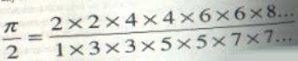

Pi: Paradise for number
lovers
During the history of mathematics pi had its fair share of controversies of many different methods to find pi and what it really equaled. One of the earliest methods for finding the value of pi was by an Egyptian, who was known as Ahmes, around 1650BC. He wrote “Cut the 1/9 of a diameter and construct a square upon the remainder, this has the same area as the circle.” This then means that the area of a circle is 8/9 or the ratio of circumference to the diameter equals 256/81 or 3.16049…. This value is indeed 1 percent off from the true value of the actual value of pi.
One thousand years later, the Babylonians and early Hebrews were simply using the value 3 for the value of pi, which was way off. After over 1 thousand years no one gave much thought about finding the value of pi, but Anaxagoras of Clazomenae (500-428BC) had developed a way for drawing a square, which the area was equal to the circles. But he did not write down the method he did this.
Soon after this discovery, Antiphon and Bryson of Heraclea (469-399BC) tired a new approach by continually doubling hexagons sides until the polygon will be a circle otherwise known as the exhaustion method. Archimedes used the same method to find the approximate value of pi, but instead of finding the area he found the perimeter. The Roman Empire (27 to 476 BC) usually used 3 1/8 for pi even though they knew 3 1/7 was closer to the actual value.
Ch’ang Hong was a Chinese astrologer in the beginning of the second century B.C. and wrote that (the circumference of a circle) 2 ¸ (perimeter of circumscribed square) 2 = 5/8. This means that when you work out the maths it equals the square root of 10, or about 3.162. In the year 263 Liu Hui used the same method as the Greeks Bryson and Antiphons and used it to approximate the area of the circle. By using a polygon of 192 sides he mentioned that the circle lied between 3.141024 & 3.142704. The real glory came when Tsu Ch’ungchih and his son Tsu Keng-chih, apparently used a 24,576 sides concluded that pi is approximately 355/113 (3.14159265……)
Aryabhata, an Indian mathematician came up with calculating a 384-sided polygon to find pi. He found that it was the square root of 9.8683. In the fourth couplet he wrote, “Add 4 to 100, multiply by 8 and add 62,000.” This value approximated the circle’s circumference whose diameter was 20, 000. When 62, 832 was divided by 20, 000 and resulted in 3.1416, which was more accurate than the square root. Brahmagupta was another Indian mathematician, of the seventh century, who calculated the perimeters of inscribed polygons with 12, 24, 48 and 96 sides as (square root of 9.65), (square root of 9.81), (square root of 9.86), and (square root of 9.87). He then wrote that the pi value was 3 and the neat value was the square root of 10.
In 1220, Fibonacci approximated pi to be 1440/(458 1/3) or 864/275 (around 3.1418). In 1579 Viete used the old polygon method to determine that pi was greater than 3.1415926353 and less than 3.1415926537. To achieve this value he doubled the sides of two hexagons sixteen times, finding the perimeters of polygons with 393, 216 sides each. In Vietes 1593 book, he broke his polygons into triangles and found the ratio of the perimeters between a regular polygon and a second polygon with twice the number of sides equaled to cosine. He used the half-angle formula and found a way to describe pi as a product: 2/pi = (square root of ½) x (square root of ½ + ½) x (square root of ½ x square root of ½ + ½) x (square root of ½ + ½ x square root of ½ x …. and so on.
In 1585 Dutch mathematician Adriaen Anthonisz used inscribed and circumscribed polygons to demonstrate that 377/120 > pi > 333/105. That wasn’t very impressive as it was the same as the Chinese value. Another Dutch mathematician, Adriaen Romanus found pi to 15 places using a polygon with over 100 million sides. Ludolf van Ceulen spent years calculating pi to 20 places using the same method that Archimedes used, but his polygons had more than 32 billion sides each. By the time he died in 1610 he had calculated pi to 35 digits.
Michael Constantine Psellus had a favourite way of finding the area of a circle. He would take the geometric mean between an inscribed and circumscribed square. The product would end up being the square root of 8 or 2.8284271…… Piero della Francesca wrote
Pi = 22/7 in 1475. Leonardo da Vinci used the value 3 1/8, but he invented a way to find the area of a circle. If you have a wheel whose thickness is half its radius, and roll it one full revolution, the area of the track it leaves equals the area of the wheel. The track, you see, is a rectangle with a width of 1/2r and a length of 2rpi. Multiplying it by 2 will result in pi x r to the power of 2.
In 1621 Dutch mathematician Willebrod Snell scribed and circumscribed a hexagon on a circle he concluded that pi was between 3.14022 and 3.14160. John Wallis was a mathematician who used an infinite number of squares to work out pi.
Scotsman James Gregory used a pi: arctangent series to figure out pi:
John Machin used the difference between two arctangents to find 100 digits of pi. He used the formula: pi/4 = 4 arc tan (1/5) – arc tan (1/239). Leonhard Euler found a method in which the arctangents were used to find pi to 20 places in a single hour. William Rutherford used pi/4 = 4 arc tan (1/5) – arc tan (1/70) + arc tan (1/99) to find 208 digits of pi in 1841.
Many years have passed and with ever increasing technology advancements people
were now able to use computers and machines to help them calculate the value of pi.
The Chudnovsky brothers made a landmark in calculating the most number of digits of pi.
They used a computer to calculate 50 million digits.